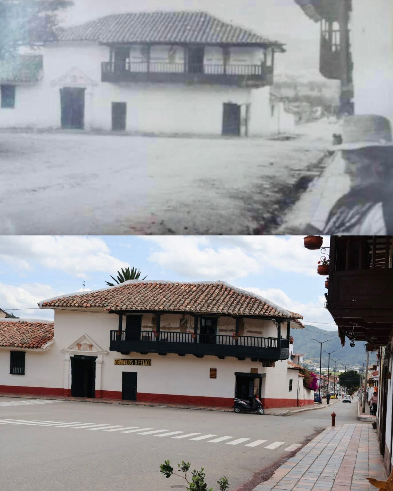
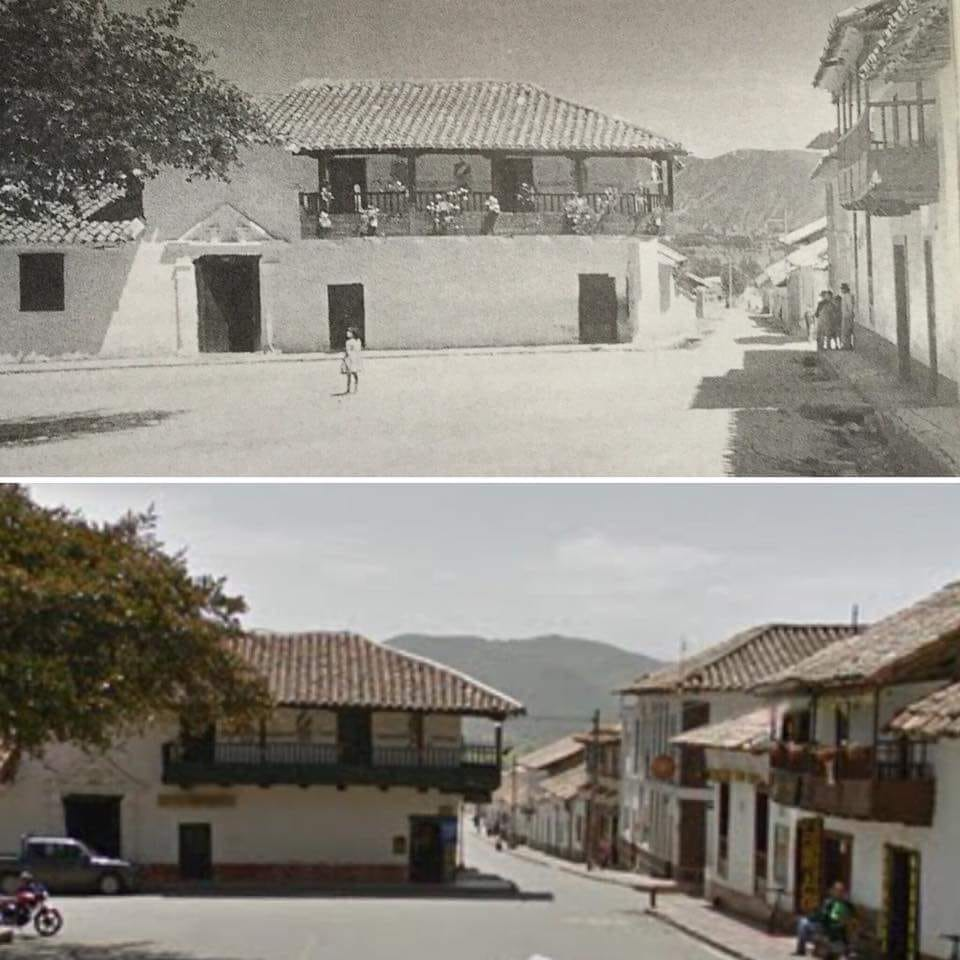
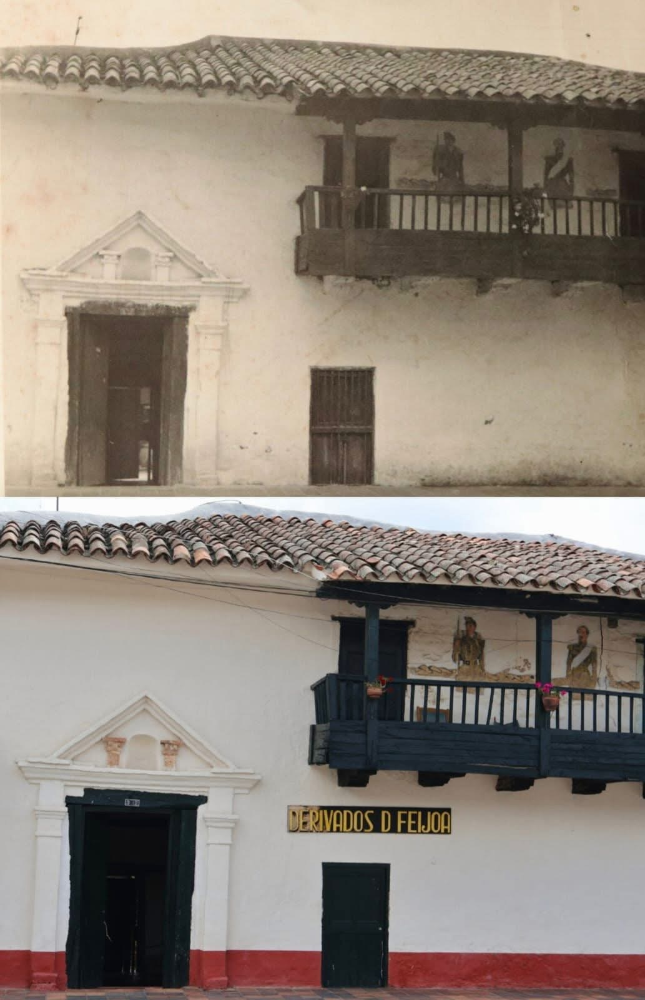
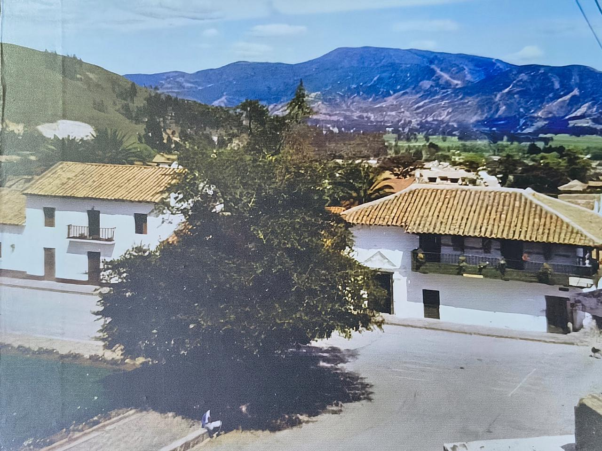
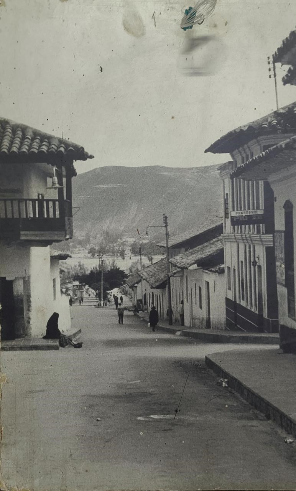
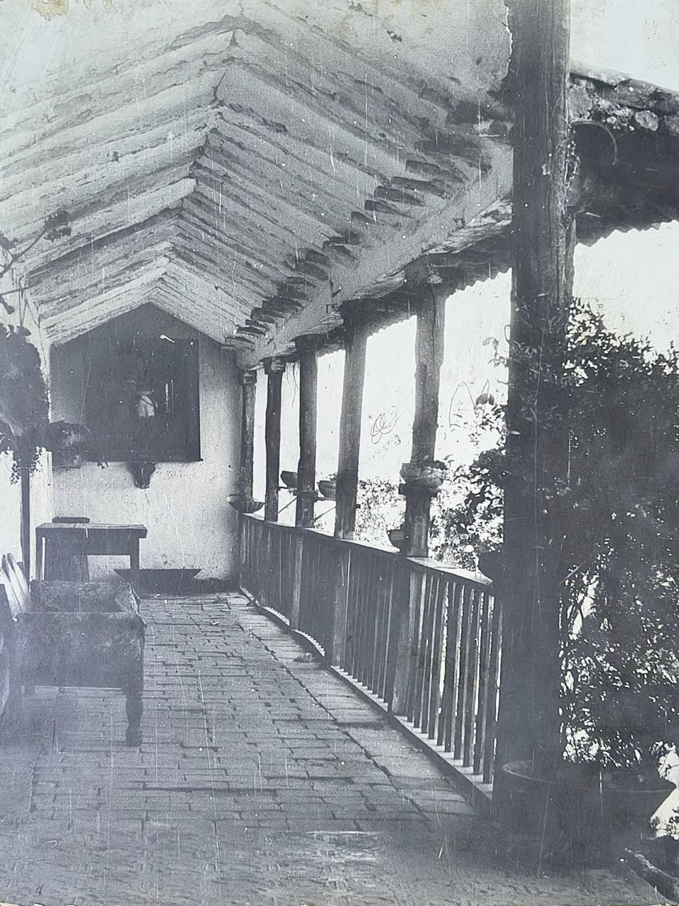
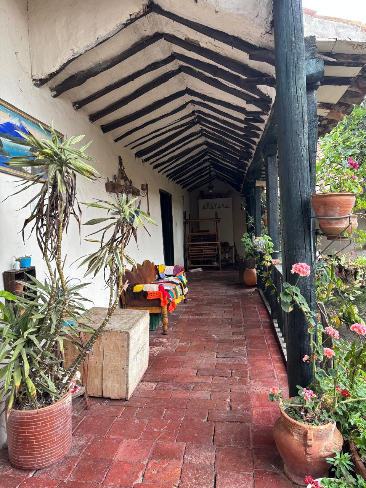

La Casa del Pilar es una edificación de origen colonial, cuya construcción se sitúa hacia mediados del siglo XVI. Es considerada una de las más emblemáticas de Tibasosa, Boyacá, y tradicionalmente se ha relacionado su historia con los acontecimientos que marcaron el proceso de independencia de Colombia. Si deseas conocer más sobre este patrimonio histórico, ven y echa un vistazo a este video narrado por su dueña y publicado por la biblioteca municipal de Tibasosa.
Esta casa colonial es reconocida, según la tradición oral del municipio, por haber alojado al Libertador durante la campaña independentista de 1819, en el contexto de la Batalla del Pantano de Vargas. Si deseas conocer un piquito más, te invitamos a ver este corto video publicado por la biblioteca municipal de Tibasosa.
Reconocida como una de las joyas coloniales mejor conservadas del municipio, la Casa del Pilar es un testimonio vivo del pasado. Su estructura de tapia pisada destaca por el tradicional patio central y su acceso por el zaguán. Entre sus mayores atractivos se encuentra una antigua pesebrera, delicados frescos que adornan el balcón y el imponente pilar de piedra que le da nombre y soporte a la estructura.
El “pilar”, que da nombre a la Casa del Pilar, es una estructura de piedra tallada a mano que, desde la época colonial, sostiene el balcón principal de la vivienda. Sus piezas fueron ensambladas mediante técnicas tradicionales, utilizando morteros de arena, cal y agua, característicos de la construcción de aquel tiempo.
Los frescos ubicados en el balcón fueron pintados a finales del siglo XIX y comienzos del siglo XX por José María Girata, oriundo de este municipio. Estas pinturas fueron elaboradas con pigmentos de origen mineral y vegetal extraídos de piedras de río. En el centro se encuentra Napoleón III acompañado de dos soldados.






